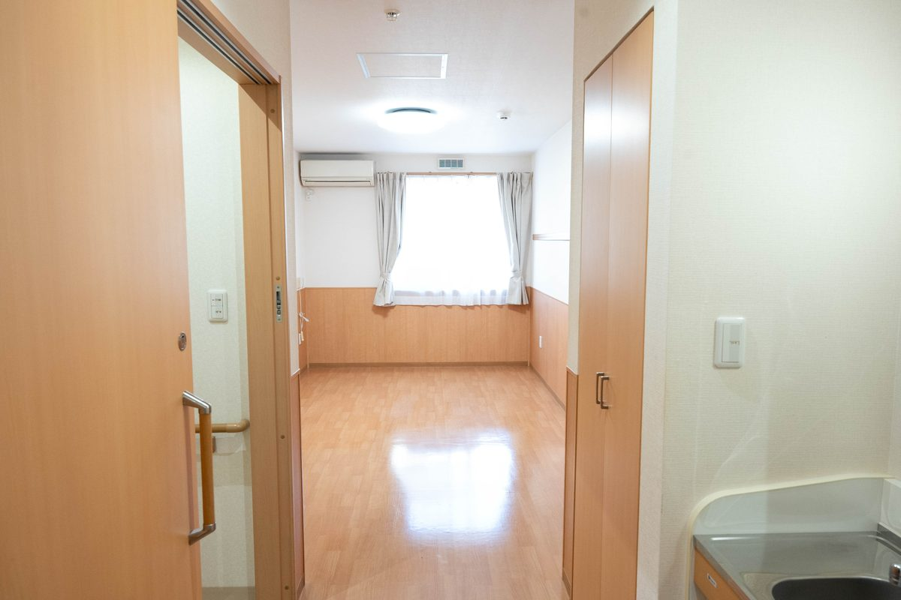
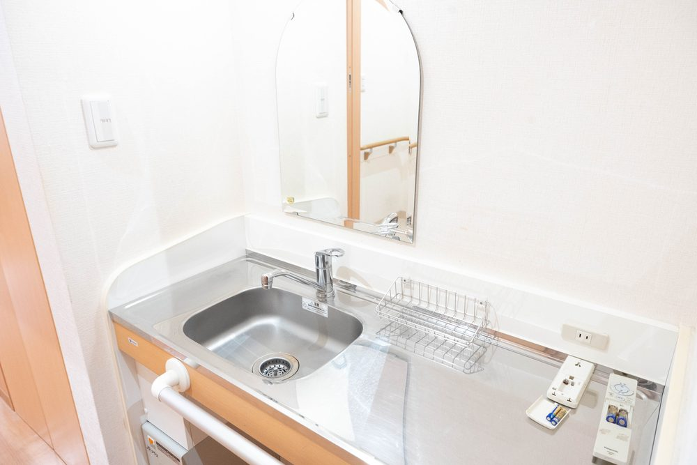
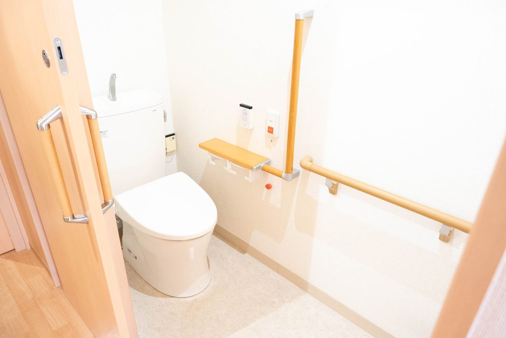
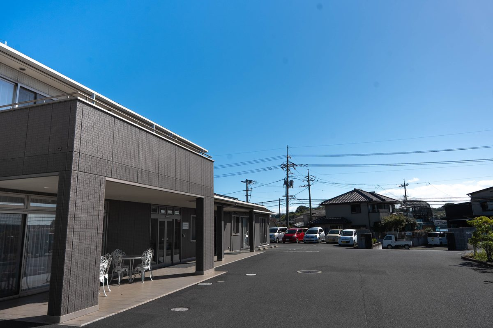

メディケアビレッジかしわじまは、どんな住まいですか？
A. 回答メディケアビレッジかしわじまは、倉敷市玉島柏島にある複合介護施設です。この住まいはそのA棟にあるサービス付き高齢者向け住宅です。医療法人いなだ医院が運営する28戸の賃貸住宅で、同じ建物・同じ敷地にデイサービス、訪問介護、小規模多機能ホームがあります。安否の確認と生活相談を受けながら、必要な介護サービスを組み合わせて暮らす住まいです。

建物と設備
| 項目 | 内容 |
|---|---|
| 所在地 | 〒713-8123 岡山県倉敷市玉島柏島920-14 |
| 住宅戸数 | 28戸 |
| 専用面積 | 18.33m²〜30.82m² |
| 構造・階数 | 軽量鉄骨造 2階建（2014年3月竣工） |
| 設備 | エレベーター、緊急通報装置、共同利用設備あり |
| 登録番号 | 倉敷市第1306号（サービス付き高齢者向け住宅として登録） |
| 交通 | JR山陽本線 新倉敷駅からバス15分、降車後 徒歩2分 |



入居できる方
次のいずれかにあてはまる方が対象です。
- おひとり暮らしの高齢者の方
- 高齢者の方と、その同居者（配偶者、60歳以上のご親族など）
ここでいう「高齢者」とは、60歳以上の方、または要介護・要支援の認定を受けている60歳未満の方を指します。契約は賃貸借契約です。
費用の目安
国土交通省の「サービス付き高齢者向け住宅情報提供システム」に当法人が登録している概算額です（情報更新日 2025年1月7日）。お部屋の広さによって幅があります。実際のご請求額とは異なります。ご検討の際は重要事項説明書でご確認ください。
| 毎月かかるもの | 概算額 |
|---|---|
| 家賃 | 約49,000円 〜 約76,000円 |
| 共益費 | 約20,000円 |
| 状況把握・生活相談サービス | 約16,500円 |
| 食事の提供 | 約51,300円（30日間利用した場合の想定額） |
| 入居時にかかるもの | 概算額 |
|---|---|
| 敷金 | 約98,000円 〜 約152,000円（家賃の2か月分） |
| 前払金 | なし |
このほかに、介護保険サービスを利用された場合の自己負担、医療費、日用品費などがかかります。費用の詳しいご説明は、お電話でのご相談または見学の際にいたします。

介護サービスはどう利用しますか
この住宅は「特定施設入居者生活介護」の指定を受けていません。つまり、住宅そのものが介護サービスを一括で提供する形ではなく、必要な介護サービスを外部から組み合わせて利用する仕組みです。
同じ建物・同じ敷地に事業所があるため、次のサービスを組み合わせやすい環境です。
- デイサービスセンターこはる日和（同じA棟の中）
- 訪問介護 こはる日和（同じA棟の中）
- 小規模多機能ホーム こはる日和（隣のB棟）
- いなだ医院の訪問看護・訪問リハビリテーション
どのサービスをどれだけ利用するかは、ケアマネジャーと相談しながら決めていきます。担当のケアマネジャーがいない場合は、かしわじま居宅介護支援センターにご相談ください。
医療との連携
運営しているのが医療機関であるため、次のような体制をとっています。
- いなだ医院による訪問診療と、必要なときの往診
- 夜間を含めて医師に連絡できる体制
- 胃ろう、在宅酸素など医療的ケアが必要な方の受け入れ実績
- ご本人とご家族の希望をうかがったうえでの、看取りへの対応
空室のお問い合わせ
空室の状況は日によって変わります。最新の状況はお電話でお問い合わせください。見学も受け付けています。
- メディケアビレッジかしわじま：086-522-8787
- ご相談全般：かしわじま居宅介護支援センター 086-525-0600
参考にした情報
お部屋の空き状況や費用について、お気軽にお問い合わせください。
最終更新：2026年8月26日